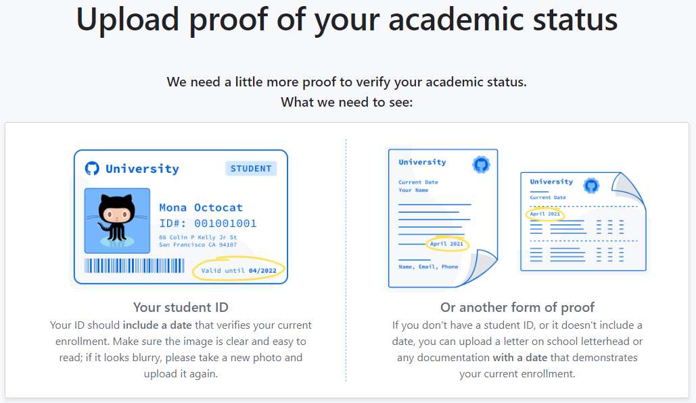
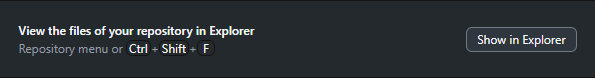

Getting Setup
This document will teach you how to setup your computer with GitHub, VSCode and a Virtual Environment so you can start working on python projects!
Step 1: Setting up Visual Studio Code
Click to learn more about VS Code!
Visual Studio Code (often referred to as VS Code) is a free, open-source code editor developed by Microsoft. It’s lightweight, yet powerful, and supports development in multiple programming languages such as Python, JavaScript, Java, C++, and many more. VS Code features include syntax highlighting, intelligent code completion (IntelliSense), code refactoring, and debugging tools. It also supports Git for version control, has a built-in terminal for command-line operations, and a rich ecosystem of extensions for enhancing its functionality. It’s designed to be highly customizable, allowing users to change the editor’s theme, keyboard shortcuts, and preferences. VS Code is available for Windows, macOS, and Linux. It’s widely used by developers across the globe for both small and large scale projects.
Installing VSCode & Extensions
First, you’ll want to download and install the latest version of Visual Studio Code. Make sure you download the correct version for your computer (Windows, Mac, Linux).
Follow the steps in the dialog windows, and once installed, you next need to download some essential extensions. On the left side of the window, there will be a bar with some icons. Select the extensions icon: From there, search for and install the following: (Or just click the links below and hit ‘install’)
- GitHub Copilot & GitHub Copilot Chat
- Python
- Jupyter
- Any others that seem interesting or useful :)
For more information on how to use VSCode, see the resources at the bottom of this page
Step 2: Setting up GitHub
Click to learn more about GitHub!
GitHub is a web-based platform used for version control and collaboration. It allows multiple people to work on projects at once without overwriting each other’s changes. GitHub is built on Git, a distributed version control system that tracks changes to files. With GitHub, you can manage and store revisions of projects, share your code with others, view and track changes, and even revert back to previous versions of your code. It’s widely used by software developers for personal projects, open-source projects, and team-based enterprise software development.
Making Your Account
Head over to GitHub.com and make an account if you don’t already have one. Make sure you use your Dalhousie email when signing up as this will allow you to sign up for the student developer pack which gives you access to AI tools like GitHub Copilot!
Getting Student Perks
Once you’ve made and verified your account, head over to the GitHub Student Developer Pack Application. Make sure Student is selected, and then scroll down to the bottom of the page.
If you signed up with your Dalhousie email address, it should automatically detect Dalhousie University as your school. Click Select this School, and then Continue. If you don’t see this, enter your Dalhousie email address and verify it now. Note: Your browser may prompt you to share your location, this is required and you will not be allowed to continue until you agree.
On the next page, you will have to take a picture of your Dalhousie Student ID (I reccomend using your laptop webcam for simplicity), and upload it. Note: The website says you need to have an expiration date on your card, but since Dal student ID’s don’t have one you should be fine. If it keeps giving you errors, ask someone for assistance :)

This step can be a bit tricky and students sometimes get errors saying they require 2FA (2-factor authentication), in which case you will need to add your phone number or some other 2FA to your github account. If you have tried to troubleshoot on your own and keep getting stuck, just swing by the club and ask one of the SURGE folks - we’re happy to assist :)
After you have completed the GitHub setup, you will get an email in a few hours/days saying that your application has been accepted. Once you receive this, you can open VSCode up, find the GitHub Copilot extensions and log into them. Now you have access to a powerful AI that can help you understand and write code!
Installing GitHub Desktop
Finally, you will need to install GitHub Desktop. This application provides a friendly user-interface to work on GitHub repositories without having to learn the git bash (command line). Install that and log into your GitHub account.
Once this is done we highly reccomend you check out some further tutorials on what GitHub is, and how to effectively use it! There is a mini introduction to GitHub here, as well as other great resources at the bottom of this page
Step 3: Setting up a Virtual Environment
Click to learn more about Virtual Environments & Miniforge!
Virtual environments are isolated spaces for installing and managing packages and dependencies for specific projects without affecting the global Python environment. They offer isolation, precise dependency management, portability, and a cleaner global environment. Virtual environments can be created using tools like venv or virtualenv in Python or Conda’s environment management features. By activating a virtual environment, users can install packages specific to that project, ensuring consistency and avoiding conflicts with other projects. This approach is essential for maintaining project-specific dependencies and ensuring reproducible and stable development environments.
Miniforge3 is a minimalistic distribution of Conda, an open-source package and environment management system widely used in data science and software development. It provides a lightweight, cross-platform tool that supports multiple CPU architectures, making it versatile for different hardware and operating systems. Miniforge3 allows users to install packages from sources like conda-forge, ensuring access to a broad range of up-to-date software. Its primary strength lies in environment management, enabling the creation of isolated environments with specific dependencies, thereby avoiding conflicts and ensuring project stability.
Installing Miniforge3
Next we need to get a python virtual environment setup so you can start coding! A virtual environment is an isolated workspace on a computer that allows projects to have their own dependencies and configurations, preventing conflicts and ensuring consistent and reproducible development and deployment. It is essential for managing multiple projects with different requirements on the same machine.
To start, head over to the conda/miniforge website and scroll down to download the version that matches your machine (windows, mac, linux, etc.)
Next, open the installer and follow the steps. It isn’t necessary, but I reccomend selecting Install for all Users. Once the installation is complete you should be able to find a program called “Miniforge Prompt” or “Miniforge3” on your desktop or by searching for it.
Setting Up Your Environment
The next step involved you cloning a repository to your computer so make sure you have your GitHub account & GitHub Desktop setup. In the GitHub Desktop App, in the top left, click on Current Repository > Add > Clone Existing Repository. Now either find the repository called “SURGE-NeuroTech-Club/virtual-environments” or if you can’t find it, click on URL and paste in: SURGE-NeuroTech-Club/virtual-environments. Before clicking Clone, copy the location of the folder it will clone to - you’ll need it soon.
Next, you’ll want to open your Miniforge3 Prompt and use the cd command to change to the directory to where you cloned the repository. For example, type: cd "the location to the repository you coppied". If you aren’t sure where you cloned the repository, you can click on this button  in the GitHub desktop app and copy the path.
You will know you’re in the right directory when it reads something along the lines of: (base) C:\..\..\virtual-environments. Once you see this, type in: mamba env create -f ncil.yml. This will read the list of libraries and packages within the ncil.yml file and begin to download and install them into a virtual environment for you. You may be prompted to answer Yes/No (Y/N) at some points during the installation process.
Once the install is complete, you can check that it worked by typing in: mamba activate ncil. This should change from (base) C:\etc... to (ncil) C:\etc....
Using Your Virtual Environment in VSCode
Now that you have installed your virtual environment, you can use it in VSCode! To do this, all you have to do is open up VSCode and hit ctrl+shift+p (command+shift+p on mac), and type: Python: Select Interpreter. Then from the drop-down menu you should be able to see “Python 3.12.2 (‘ncil’)” and tada you can now execute python scripts using your brand-new virtual environment!
Additional Resources
The NCIL Lab Handbook has many great resources - Data Science Tools
VSCode:
GitHub: